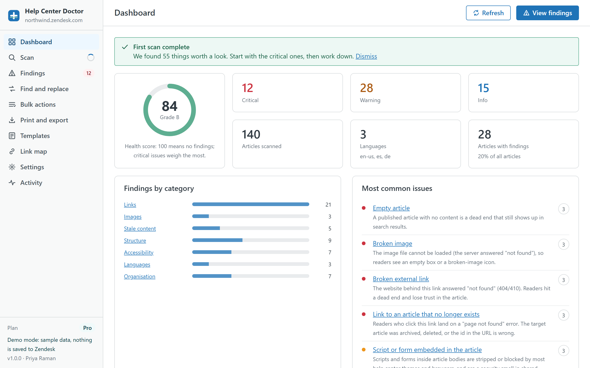

Health Scan
Reads articles, translations, sections and categories through the Zendesk API and runs 34 rules: links, images, stale content, structure, accessibility, organisation and languages. You get a score, a grade and a ranked list.
All 34 rulesHelp Center Doctor scans every article in your Zendesk help center for broken links and images, stale content, missing translations and accessibility gaps. Then it fixes them where they are: one click at a time, in bulk, or with find and replace across the whole knowledge base.
Free for help centers up to 200 articles. Pro is $29 per account per month with a 14-day trial. Installed from the Zendesk Marketplace, billed by Zendesk.

Each module works on the same scan, so you never wait twice. Fixes, replacements and bulk actions all go through the same preview, snapshot and undo path.
Reads articles, translations, sections and categories through the Zendesk API and runs 34 rules: links, images, stale content, structure, accessibility, organisation and languages. You get a score, a grade and a ranked list.
All 34 rules
Each finding explains what is wrong, why it matters and how to fix it. Replace a link, add alt text, publish a target, unpromote, add labels or move a section, for one finding or fifty at once.
How fixes work
Plain text or regular expressions across titles and bodies in every language. Search visible text, only links and images, or raw HTML. Live preview with a diff per article before anything is written.
Find and replace details
Filter by category, section, label, author, status, language or health, select hundreds of articles and add labels, move, change author, visibility or permission group, promote, publish, mark translations current or archive.
Bulk actions list
Build a document from a section, a category or a selection: cover page, table of contents, page breaks, your logo and footer. Print or save as PDF from your browser, or download HTML, Word (.docx) or Markdown.
Document options
Six built-in article templates and six snippets to start from, plus your own. New article from template creates a draft in the section you choose and opens the Guide editor.
Templates in Guide
See every article that links to the one you want to archive or move. Redirect those links first, then archive, and no reader ever hits a dead end.
Link mapThere is no account to create and no API key to paste. The app uses the Zendesk session you are already signed in with.
Install from the Zendesk Marketplace, open the app in the left navigation bar and click Scan now. A few thousand articles take a minute or two. A scan never changes anything.
Sort by severity, filter by category, section or language, and read the plain-language explanation next to each finding. Hide the ones that do not apply; switch off rules that never will.
Choose a fix, check the preview, apply. A snapshot file is downloaded before the first write and undo stays available while the tab is open.
Writing to a help center through an API deserves guard rails. These are on by default and cannot be skipped by accident.
Every change set is listed article by article with a word-level diff of what will change. Untick anything you do not want. Nothing is written until you confirm.
Before the first write, the app downloads a JSON snapshot of the affected articles to your computer. You can restore from that file at any time, even weeks later.
The last 20 change sets of the session can be reverted from the Activity screen, one write per article. Archiving is the only action undo does not cover, and the app says so before you archive.
Saving an article body through the Zendesk API turns content blocks into plain content. The app asks you to acknowledge this before any body is written, and prefers metadata-only fixes (labels, sections, publish state, promotion, translation status) whenever a finding can be resolved without touching the body.
Most help center tools ask you to sign up on their site and paste an API key, then copy your articles to their servers. Help Center Doctor has no servers.
Articles (title, body, labels, status, votes, dates), translations, sections, categories, author names, user segments, permission groups and brands. All through the Zendesk API, with the permissions of the signed-in agent.
In your browser's storage (IndexedDB), so re-scans are fast: the scan cache, link-check results, settings, templates and the activity log. Clear local data removes all of it in one click.
Nothing to us and nothing to third parties. No analytics, no cookies, no AI services. The only outbound requests are the external link checks, sent through Zendesk's own request proxy.
Billed monthly by Zendesk through Stripe with your Marketplace subscription. Cancel any time from Admin Center.
$0
per account per month
$29
per account per month, 14-day trial
$59
per account per month, 14-day trial
The demo is the real app running on a generated help center with 140 articles, 3 languages and plenty of planted problems. Nothing is saved anywhere.
No. The app is a client-side Zendesk app. It reads and writes through the Zendesk API from your browser, using your own session, and keeps its working copy in your browser's storage. There is no server on our side to send anything to. External links found in your articles are checked through Zendesk's request proxy so the destination site can answer whether the page exists.
Any Zendesk Support account with a help center (Guide). Scanning works for anyone who can read the help center. Applying changes needs a role that can edit the articles in question; the app detects read-only roles and tells you before you try.
Every change is previewed with a diff, a snapshot file is downloaded before the first write, and undo covers the last 20 change sets of the session. Articles using content blocks (Guide Enterprise) are flagged before any body write. Archiving asks for a separate acknowledgement because it can only be reversed in Guide.
A scan uses roughly one API request per 100 articles and stays well under Zendesk's rate limits, so a few thousand articles take a minute or two. After the first scan, Refresh reads only the articles that changed.
Through your Zendesk Marketplace subscription, processed by Stripe. One price per Zendesk account per month, whatever the number of agents. Paid plans start with a 14-day trial. You can change or cancel the plan from Admin Center at any time.
No. All 34 rules are deterministic checks you can read on the features page. No content is sent to any AI service, and nothing is used to train anything.
Version 1.0 scans the help center of the account you are signed in to and lists your other brands in Settings. Multi-brand scanning is planned for the Business plan once cross-brand access has been verified. Until then, open the app while signed in to the other brand's subdomain.
English, Spanish, German, French and Portuguese (Brazil). It follows your Zendesk profile language and can be changed in Settings.